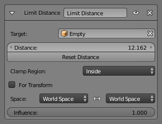

Limit Distance Constraint 限定距离约束¶
限定距离 约束强制被约束对象与目标保持远离、靠近或者一个给定距离。换句话说，自身的位置被限制在以目标为中心的球体以外，以内或表面。
当指定一个(新的)目标时，该 距离值 会自动设置为约束对象和该目标之间的当前距离。
Important
请注意，如果对 相连 骨骼使用该约束，将不起作用，因为父级骨骼头部位置决定了该骨骼根部所在位置。
Options 选项¶

限定距离面板。
- Target 目标
- 数据ID 用于选择约束目标，当它为空时此约束不起作用(红色状态)。
- Distance 距离
- 该数字按钮用于设置限定距离，即约束球的半径。
- Reset Distance 重置距离值
- 单击后，将重置 距离 值，使之与约束对象与目标之间的实际距离(即应用约束前的距离)一致。
- 限定范围
限制模式(Limit Mode) 选择菜单，用于选择 距离(Distance) 设置和目标中心确定的球体的限定方式：
- Inside 向内
- 将对象约束在球体 内部 。
- Outside 外向
- 将对象约束在球体 外部 。
- Surface 曲面上
- 将对象约束在球体 表面 。
- For Transform 针对形变
- ToDo.